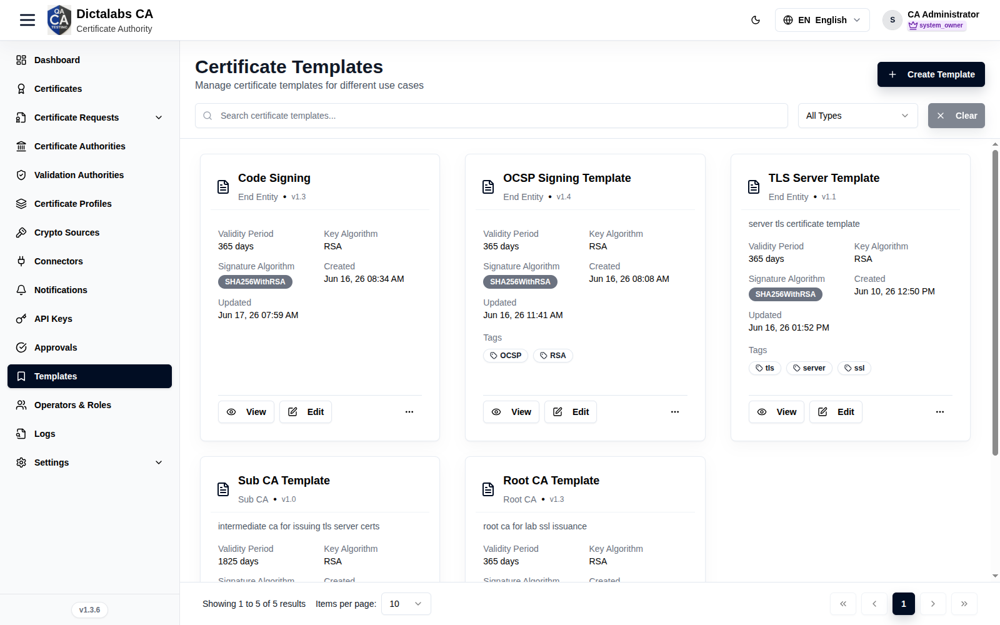
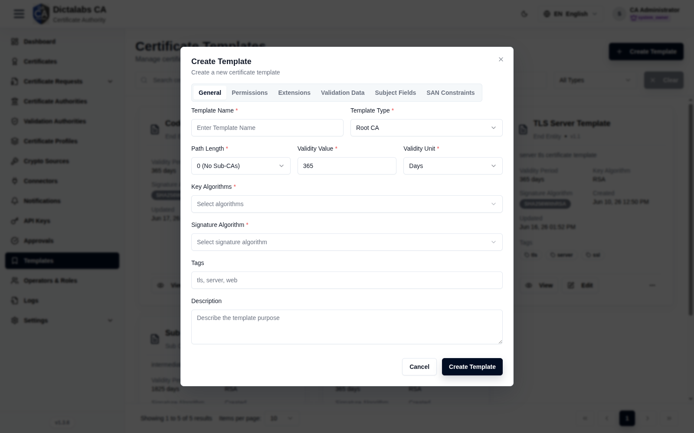
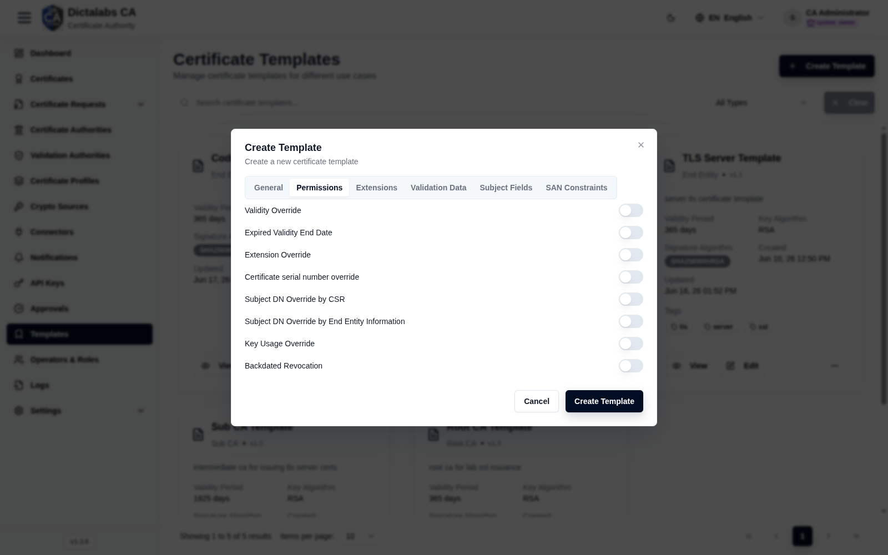
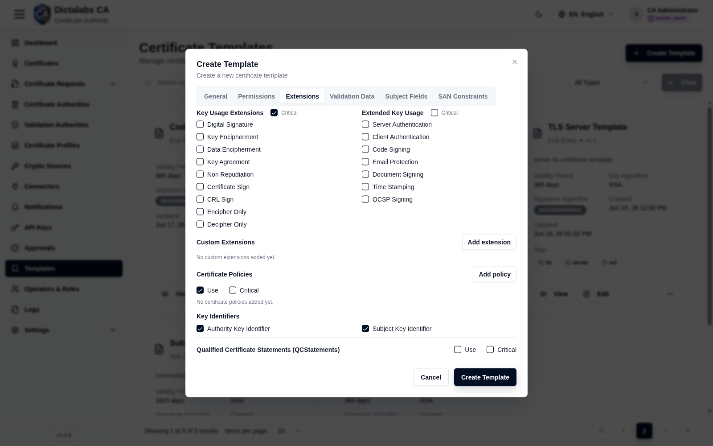
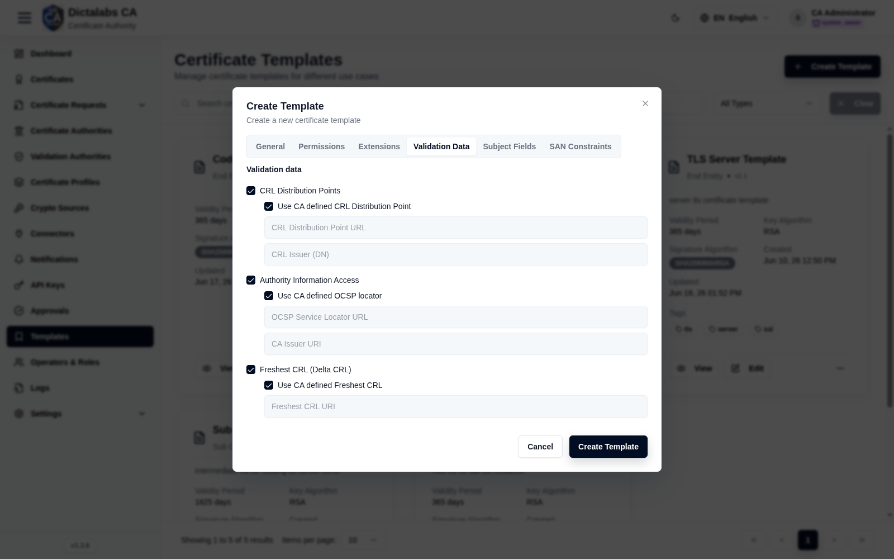
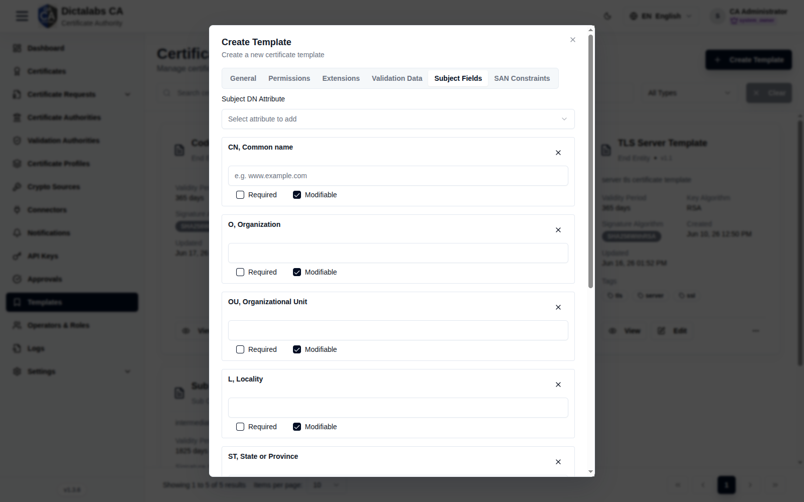
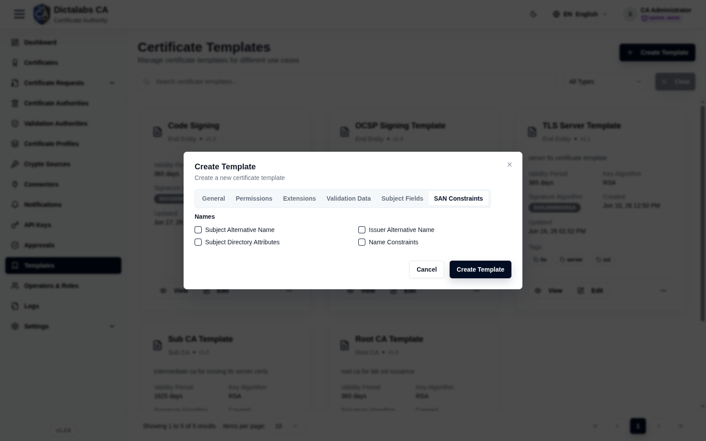

Create Templates
Certificate Templates. Prerequisite: signed in to the tenant. Create templates before building CAs and profiles — both reference a template.
Purpose
Certificate Templates are reusable blueprints — type, validity, key/signature algorithms, extensions, subject-field and SAN constraints. You typically create a Root CA Template, a Sub CA Template, and one or more End-Entity templates (e.g. TLS Server, OCSP Signing).
Navigation
Templates
Overview

- Create Template button, search, type filter.
- Card grid — name, type (Root CA / Sub CA / End Entity), version, validity, key algorithm, signature algorithm, tags, plus View / Edit.
Fields — Create Template dialog
The dialog has six tabs: General, Permissions, Extensions, Validation Data, Subject fields, and SAN constraints. Fields marked with a red asterisk (*) are required. Some controls appear only after you enable a related option.
General

Defines the template's identity and the cryptographic profile every certificate issued from it must satisfy. The key-algorithm, size, and signature choices you make here become the allowed set — requesters cannot go outside them.
| Field | What to enter | Why it matters |
|---|---|---|
| Template name | A clear, unique name (e.g. TLS Server, Root CA 2026) |
Identifies the template when building CAs, profiles and certificate requests. |
| Template type | Root CA, Sub CA, or End Entity | Sets whether the certificate is a CA (is_ca) and drives which fields appear. Root/Sub CA expose Path length; End Entity is for leaf certificates. |
| Path length | The number of sub-CA levels allowed below this CA: 0 (No Sub-CAs), 1 (One level Sub-CAs), or 2 (Two level Sub-CAs) |
Only shown for Root CA / Sub CA types. Becomes the Basic Constraints path-length constraint, capping how deep the CA hierarchy can go. |
| Validity value | A positive whole number (default 365) |
Combined with the unit, sets the default lifetime of issued certificates. Must be greater than 0. |
| Validity unit | Days, Months, or Years | Scales the validity value into the certificate lifetime. |
| Key algorithms | One or more of: ECDSA, RSA, ML-DSA-44, ML-DSA-65, ML-DSA-87, ML-KEM-512, ML-KEM-768, ML-KEM-1024 | The allowed subject-key algorithms. Multi-select. ML-DSA/ML-KEM are post-quantum algorithms; ML-KEM is a key-encapsulation mechanism (no signing). At least one must be chosen. |
| Available ECDSA curves | One or more curves: Any allowed by bit lengths, P-192 / prime192v1 / secp192r1, P-224 / secp224r1, P-256 / prime256v1 / secp256r1, P-384 / secp384r1, P-521 / secp521r1, secp256k1, brainpoolP256r1, brainpoolP384r1, brainpoolP512r1 |
Shown only when ECDSA is selected. Restricts which named curves a subject key may use. Choose Any allowed by bit lengths to instead constrain by bit length via the ECDSA key sizes field. |
| RSA key sizes | One or more of 1024, 2048, 3072, 4096 bits (Select all available) |
Shown only when RSA is selected. Defines the permitted RSA modulus sizes. Prefer 2048+ for production; 1024 is legacy/weak. |
| ECDSA key sizes | One or more of 192, 224, 256, 384, 521 bits |
Shown only when ECDSA is selected and the curve list includes Any allowed by bit lengths. Constrains ECDSA keys by bit length rather than by named curve. |
| Signature algorithm | One of: SHA256withRSA, SHA384withRSA, SHA512withRSA, SHA256withECDSA, SHA384withECDSA, SHA512withECDSA, ML-DSA-44, ML-DSA-65, ML-DSA-87 | The algorithm used to sign issued certificates. Match it to the key algorithm (e.g. an RSA key with a ...withRSA signature). ML-KEM is deliberately absent — it cannot sign. |
| Tags | Comma-separated labels (e.g. tls, production) |
Optional. Used for filtering and grouping templates in the list. |
| Description | Free-text notes on the template's purpose | Optional. Helps operators pick the right template. |
Permissions

Controls what a requester (or an incoming CSR) may override at request time versus what the template locks down. Each control is an on/off switch; off is the safer, more restrictive default.
| Field | What to enter | Why it matters |
|---|---|---|
| Validity Override | On to let requesters set a validity other than the template default | Enables per-request lifetimes; leave off to enforce the fixed validity above. |
| Expired Validity End Date | On to allow an end date in the past | Rarely needed; permits back-dated expiry. Keep off unless a specific migration requires it. |
| Extension Override | On to let the request change certificate extensions | Loosens control over KeyUsage/EKU and other extensions defined on this template. |
| Certificate serial number override | On to let the request supply the serial number | Normally the CA assigns serials; enabling this is for special interoperability cases only. |
| Subject DN Override by CSR | On to take the subject DN from the submitted CSR | Lets the CSR's subject replace the template's subject-field values. |
| Subject DN Override by End Entity Information | On to take the subject DN from end-entity data | Lets stored end-entity details drive the subject DN instead of the template. |
| Key Usage Override | On to let the request change KeyUsage bits | Loosens the KeyUsage set fixed on the Extensions tab. |
| Backdated Revocation | On to allow a revocation date earlier than "now" | Needed when a compromise must be recorded as of an earlier time. |
Extensions

Defines the X.509 extensions baked into issued certificates: KeyUsage, Extended Key Usage (EKU), any custom extensions, certificate policies, key identifiers, and ETSI qualified- certificate statements. Each usage group has a Critical checkbox that marks the extension critical in the certificate.
| Field | What to enter | Why it matters |
|---|---|---|
| Key usage extensions | Tick the applicable bits: Digital signature, Key encipherment, Data encipherment, Key agreement, Non repudiation, Certificate sign, CRL sign, Encipher only, Decipher only | Sets the KeyUsage extension — the cryptographic operations the certificate is allowed to perform. CA templates need Certificate sign and CRL sign; TLS servers typically need Digital signature and Key encipherment. |
| Key usage — Critical | Tick to mark KeyUsage critical | KeyUsage is normally marked critical so clients must honour it. |
| Extended key usage | Tick the applicable purposes: Server authentication, Client authentication, Code signing, Email protection, Document signing, Time stamping, OCSP signing | Sets the EKU extension — the higher-level purposes the certificate is valid for (e.g. Server authentication for TLS servers, OCSP signing for responder certs). |
| Extended key usage — Critical | Tick to mark EKU critical | Marking EKU critical forces relying parties to enforce the listed purposes. |
| Custom Extensions — OID | A dotted OID (e.g. 1.2.3.4.5) |
Adds an extension not covered by the standard controls. Both OID and Value are required for each row. |
| Custom Extensions — Value Type | utf8 or der_base64 |
Tells the CA how to interpret the Value: plain UTF-8 text, or Base64-encoded DER bytes. |
| Custom Extensions — Value | The UTF-8 string, or a Base64 DER value | The extension's content. |
| Custom Extensions — Critical | Tick to mark the custom extension critical | Critical extensions must be understood by relying parties or the certificate is rejected. |
| Certificate Policies — Use / Critical | Tick Use to emit the Certificate Policies extension; Critical to mark it critical | Advertises the policies under which the certificate was issued. |
| Certificate Policies — Policy OID | A policy OID (e.g. 1.2.3.4.2) |
Identifies the certificate policy. |
| Certificate Policies — CPS URI | URL of the Certification Practice Statement | Points relying parties to the governing CPS document. |
| Certificate Policies — User Notice | Explicit notice text | Human-readable notice displayed for the policy. |
| Certificate Policies — Notice Reference Organization / Numbers | Organization name and comma-separated numbers | Optional structured notice reference tying the notice to an organization's numbered statements. |
| Key Identifiers — Authority Key Identifier | Tick to include AKI | RFC 5280 requires AKI on every non-self-issued certificate; leave on. |
| Key Identifiers — Subject Key Identifier | Tick to include SKI | RFC 5280 requires SKI on CA certificates; leave on. |
| QCStatements — Use / Critical | Tick Use to emit ETSI QCStatements (EN 319 412-5); Critical to mark critical | Marks the certificate as an EU qualified certificate. |
| QCStatements — QcCompliance / QcSSCD / QCSyntax v2 | Tick as applicable | QcCompliance = EU qualified; QcSSCD = key held in a secure signature-creation device; QCSyntax v2 = syntax version. |
| QCStatements — QcType | Tick eSignature, eSeal, and/or Web auth | Declares the qualified certificate's type. |
| QCStatements — Retention period (years) | A whole number (e.g. 10) |
Records how long the issuer retains registration data. |
| QCStatements — Limit currency / amount / exponent | Currency code (e.g. EUR), amount, and exponent |
Sets the monetary transaction limit for the qualified certificate. |
| QCStatements — PDS URL / Language | A PKI Disclosure Statement URL and 2-letter language code (e.g. en) |
Points to the machine-readable PDS document per language. |
Controls (buttons):
- Add extension — adds a blank Custom Extension row.
- Add policy — adds a blank Certificate Policy row.
- Add PDS — adds a PKI Disclosure Statement URL/language row (QCStatements).
- The X on any row removes that custom extension, policy, or PDS entry.
Validation Data

Configures the revocation and issuer-information pointers embedded in issued certificates: the CRL Distribution Points, Authority Information Access (OCSP + CA issuers), and the Freshest (delta) CRL. Each section's detail fields appear only when its checkbox is ticked, and the URL fields are disabled while "Use CA defined…" is selected.
| Field | What to enter | Why it matters |
|---|---|---|
| CRL Distribution Points | Tick to include the CRL DP extension | Tells relying parties where to fetch the CRL to check revocation. |
| Use CA defined CRL Distribution Point | Tick to inherit the URL from the issuing CA | When on, the URL/issuer fields are disabled and the CA's own CRL DP is used. |
| CRL Distribution Point URL | The CRL location (e.g. http://crl.example.com/ca.crl) |
Explicit CRL URL; used only when not inheriting from the CA. |
| CRL Issuer (DN) | The DN of the CRL issuer | Set only for indirect CRLs where a different entity issues the CRL. |
| Authority Information Access | Tick to include the AIA extension | Carries OCSP and CA-issuer pointers. |
| Use CA defined OCSP locator | Tick to inherit the OCSP URL from the CA | When on, the OCSP/CA-issuer fields are disabled. |
| OCSP Service Locator URL | The OCSP responder URL (e.g. http://ocsp.example.com) |
Where clients send OCSP status requests; used only when not inheriting. |
| CA Issuer URI | URL to fetch the issuing CA certificate | Lets clients build the certificate chain. |
| Freshest CRL (Delta CRL) | Tick to include the Freshest CRL extension | Points to the delta CRL for incremental revocation updates. |
| Use CA defined Freshest CRL | Tick to inherit the delta-CRL URL from the CA | When on, the URI field is disabled. |
| Freshest CRL URI | The delta CRL location | Explicit delta-CRL URL; used only when not inheriting. |
Subject Fields

Defines the subject Distinguished Name (DN) — which attributes are present, their default values, and whether requesters must supply or may change them. These choices drive what the request wizard presents.
| Field | What to enter | Why it matters |
|---|---|---|
| Subject DN Attribute | Pick an attribute to add (e.g. CN Common name, O Organization, C Country, emailAddress, serialNumber, and many more) | Adds the attribute as a card below. Any attribute present (not removed) is treated as allowed in the subject. |
| Attribute value | A default value for the attribute (e.g. CN → www.example.com) |
Pre-fills the field for requesters; leave blank to require entry at request time. |
| Required | Tick to make the attribute mandatory | The certificate cannot be issued unless the attribute has a value. |
| Modifiable | Tick to let requesters change the value | When off, the template's value is fixed and cannot be edited at request time. |
Controls:
- The X on an attribute card removes that attribute from the subject.
- The same base attribute can be added more than once to produce multi-valued DN components.
SAN Constraints

Configures the "Names" extensions: Subject Alternative Name (SAN), Issuer Alternative Name, Subject Directory Attributes, and Name Constraints. The SAN and Subject Directory Attribute editors appear only after their respective checkboxes are ticked.
| Field | What to enter | Why it matters |
|---|---|---|
| Subject Alternative Name | Tick to enable the SAN extension and its type editor | SAN carries the identities (DNS names, IPs, e-mails, etc.) TLS and modern clients actually validate against. |
| Issuer Alternative Name | Tick to include the Issuer Alternative Name extension | Adds alternative names for the issuing CA; rarely needed. |
| Subject Directory Attributes | Tick to enable the Subject Directory Attributes editor | Carries extra identity attributes (date/place of birth, citizenship, etc.). |
| Name Constraints | Tick to include the Name Constraints extension | On CA certificates, restricts the name spaces subordinate certificates may use. |
| SAN type | Pick a SAN type to add: RFC 822 Name (e-mail address), DNS Name, IP Address, Directory Name (Distinguished Name), Uniform Resource Identifier (URI), Registered Identifier (OID), MS UPN | Adds a card for that SAN type. |
| Use entity … field | For RFC 822 / DNS / MS UPN types, tick to source the value from the entity's e-mail or CN field | When ticked, the value input is disabled and the value is taken from entity data at request time. |
| SAN value | The name value for the type (e.g. a DNS name or IP) | The default/fixed value for that SAN entry. |
| SAN Required | Tick to require this SAN type | The certificate cannot be issued without a value for it. |
| SAN Modifiable | Tick to let requesters change the SAN value | When off, the value is fixed. |
| Directory attribute | Pick an attribute: Date of birth (YYYYMMDD), Place of birth, Gender (M/F), Country of citizenship (ISO 3166), Country of residence (ISO 3166) | Adds a Subject Directory Attribute card. |
| Directory attribute value / Required / Modifiable | Default value, plus the same Required and Modifiable toggles | Sets and constrains each directory attribute the same way as subject fields. |
Controls:
- The X on any SAN or directory-attribute card removes that entry.
Step-by-Step
- Open Templates → Create Template.
- On General, set name, type (start with Root CA Template), path length, validity, algorithms.
- Configure Extensions, Subject Fields, and SAN Constraints as needed.
- Save. Repeat for a Sub CA Template and any End-Entity templates.
Important Notes
- Subject Fields and SAN Constraints here drive what requesters can enter in the request wizard.
- Match template type to intended use: Root CA / Sub CA for CAs, End Entity for leaf certs.